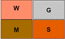
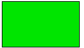
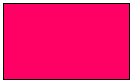
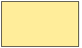
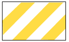
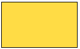

Einfügen der Hochwasserrelevanten
BPlan Flächen
 Baugebiet einfügen...
Attribute setzen...
 Grünfläche einfügen...
Attribute setzen...
Überbaubare Grundstücksfläche einfügen...
Attribute setzen...
 Gemeinbedarfsfläche einfügen...
Attribute setzen...
 Ver- und Entsorgungsfläche einfügen...
Attribute setzen...
Baulinie einfügen...
Attribute setzen...
Baugrenzen einfügen...
Attribute setzen...
 Verkehrsfläche mit besonderer Zweckbestimmung einfügen...
Attribute setzen...
 Verkehrsfläche einfügen...
Attribute setzen...
alles speichern...